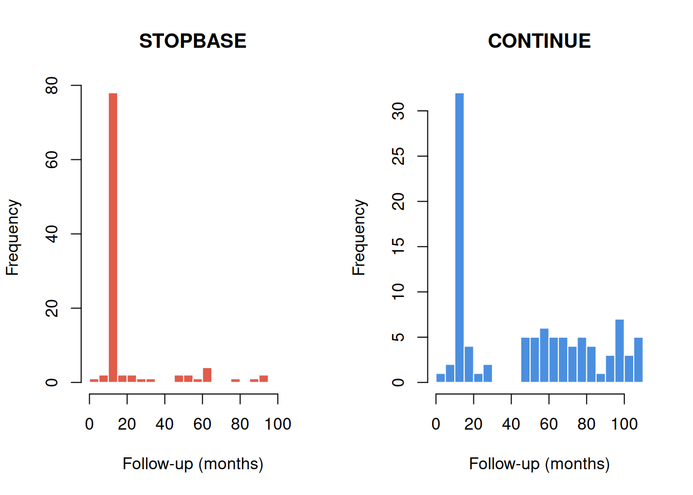

Using ettbc: Emulating a Target Trial for Breast Cancer Screening
Douglas Ezra Morrison
2026-05-01
1 Background
This article demonstrates how to use the ettbc package to emulate a target trial for breast cancer screening using the clone-censor-reweight methodology. The methods are based on the study by García-Albéniz et al. (2020), who estimated the effect of continuing annual screening mammography on breast cancer mortality in Medicare beneficiaries aged 70–84 years.
1.1 The Target Trial
The study aimed to answer: Does continuing annual screening mammography (compared with stopping) reduce breast cancer mortality in older women?
Because a randomised trial of this question is unlikely to be conducted, the target trial was emulated using Medicare claims data. The key methodological challenge is confounding by indication: women who continue screening tend to be healthier and more health-conscious than those who stop.
1.2 The Clone-Censor-Reweight Approach
The clone-censor-reweight method handles time-varying treatment and censoring in three steps (Hernán and Robins 2016):
Clone: Each participant is replicated into two copies — one assigned to the STOPBASE arm (stop screening at study entry) and one to the CONTINUE arm (continue annual screening).
Censor: Clones are censored in their assigned arm when they deviate from the protocol:
STOPBASE: censored at the first screening mammogram received after the initial grace period.
CONTINUE: censored when more than 14 months pass without any mammogram.
Reweight: Inverse probability weights (IPW) are constructed to account for the informative censoring introduced in step 2.
The ettbc package implements the first two steps with clone_censor() and provides a helper function expand_to_long() to prepare the dataset for the IPW outcome analysis.
2 Example Data
The package ships with three synthetic datasets that mimic the structure of the original study data (but contain entirely simulated values).
Code
# One row per participanthead(cohort)#> id age start_month end_month death_month bc_death bc_month#> 1 1 81 26 108 NA 0 NA#> 2 2 81 33 108 NA 0 NA#> 3 3 76 28 108 NA 0 NA#> 4 4 75 1 108 NA 0 NA#> 5 5 77 17 108 NA 0 NA#> 6 6 70 40 108 NA 0 NA
Code
# One row per screening mammogram eventhead(screening_mammograms)#> id month#> 1 1 16#> 2 1 38#> 3 1 50#> 4 1 63#> 5 1 77#> 6 1 88
Code
# One row per diagnostic mammogram eventhead(diagnostic_mammograms)#> id month#> 1 98 46#> 2 4 55#> 3 84 95#> 4 68 60#> 5 77 70#> 6 93 35
Months are numbered consecutively from 1 (January 2000) to 108 (December 2008). Participants enter the study between months 1 and 60.
Code
hist(cohort$start_month, breaks =20, main ="Study Entry Month", xlab ="Month (1 = January 2000)", col ="steelblue", border ="white")
Figure 1: Distribution of study entry months in the simulated cohort.
3 Step 1: Clone and Censor
clone_censor() takes the cohort and mammography event datasets and returns a data frame with two rows per participant — one for each arm.
end_month: final observed month (minimum of death, administrative censoring, and protocol censoring)
censor_month: month of protocol deviation censoring (NA if not censored for protocol non-adherence)
fup: follow-up time in months
died: overall mortality indicator (1 if death caused end of follow-up)
bc_died: breast cancer mortality indicator
3.1 Censoring Patterns by Arm
Because participants in STOPBASE are censored when they get a screening mammogram, annual screeners are censored early in that arm. Conversely, participants in CONTINUE are censored when they go too long without a mammogram, so non-adherers are censored early.
Code
par(mfrow =c(1, 2))stopbase<-cloned[cloned$arm=="STOPBASE", ]continue<-cloned[cloned$arm=="CONTINUE", ]hist(stopbase$fup, breaks =20, main ="STOPBASE", xlab ="Follow-up (months)", col ="#E05C4B", border ="white", xlim =c(0, 110))hist(continue$fup, breaks =20, main ="CONTINUE", xlab ="Follow-up (months)", col ="#4B8FE0", border ="white", xlim =c(0, 110))par(mfrow =c(1, 1))
Figure 2: Follow-up time by arm and censoring type.

Code
# Percentage censored for protocol non-adherence in each armprop_censored<-tapply(!is.na(cloned$censor_month),cloned$arm,mean)round(prop_censored*100, 1)#> CONTINUE STOPBASE #> 41 90
As expected, most STOPBASE clones are censored (those who continued getting annual mammograms), while only a minority of CONTINUE clones are censored (those who stopped getting mammograms).
4 Step 2: Expand to Long Format
expand_to_long() converts the cloned dataset to one row per participant-arm-month. This format is required for the discrete-time survival models used to estimate the outcome.
dead_t1: death in the next interval: 1 = yes, 0 = no, NA = censored
bc_dead_t1: breast cancer death in the next interval
bc_long: breast cancer diagnosis flag at this month
Code
# Total events in the long datasettable(long_data$dead_t1, useNA ="ifany")#> #> 0 1 <NA> #> 6852 19 181
4.1 Verifying the Long Format
A simple check: the number of observed deaths in the long dataset should equal the number of died == 1 rows in the cloned dataset.
Code
# Deaths in cloned datasetsum(cloned$died)#> [1] 19# Rows with dead_t1 = 1 in long datasetsum(long_data$dead_t1==1L, na.rm =TRUE)#> [1] 19
5 Step 3: Descriptive Analysis
Before fitting weighted outcome models, it is useful to describe the data and examine crude survival by arm.
Code
# Compute monthly event rate per armarms<-c("STOPBASE", "CONTINUE")cols<-c("#E05C4B", "#4B8FE0")plot(NA, xlim =c(0, 70), ylim =c(0, 0.15), xlab ="Months since study entry", ylab ="Cumulative mortality (crude)", main ="Crude cumulative mortality by arm")for(jinseq_along(arms)){sub<-long_data[long_data$arm==arms[j], ]# Month-by-month event countsmax_t<-max(sub$month2)cum_mort<-numeric(max_t+1L)n_risk<-numeric(max_t+1L)for(tin0:max_t){rows_t<-sub[sub$month2==t, ]n_risk[t+1L]<-nrow(rows_t)cum_mort[t+1L]<-sum(rows_t$dead_t1==1L, na.rm =TRUE)}cum_mort<-cumsum(cum_mort)/max(n_risk, 1L)lines(0:max_t, cum_mort, col =cols[j], lwd =2)}legend("topleft", legend =arms, col =cols, lwd =2, bty ="n")
Figure 3: Empirical cumulative mortality by arm (crude, without IPW). Under the null, the two arms should be similar because clones are derived from the same participants.
Note
The crude curves above do not account for the informative censoring introduced by the clone-censor step. In a complete analysis, inverse probability weights (IPW) would be applied to correct for the different censoring mechanisms in each arm. See García-Albéniz et al. (2020) for the full weighted analysis.
6 Summary
The ettbc package provides two core functions for the clone-censor step of target trial emulation:
Table 1: Core ettbc functions
Function
Input
Output
clone_censor()
cohort + mammogram events
two rows per participant
expand_to_long()
cloned dataset
one row per participant-arm-month
After running these steps, the long dataset can be used with standard weighted logistic or pooled logistic regression to estimate the intention-to-treat effect of each screening strategy.
7 References
García-Albéniz, Xabier, Hajime Uno, Deepak L Bhatt, Patrick H McArdle, Marshall M Joffe, and Miguel A Hernán. 2020. “Continuation of Annual Screening Mammography and Breast Cancer Mortality in Women Older Than 70 Years: A Prospective Observational Study.”Annals of Internal Medicine 172 (6): 381–89. https://doi.org/10.7326/M18-1199.
Hernán, Miguel A, and James M Robins. 2016. “Using Big Data to Emulate a Target Trial When a Randomized Trial Is Not Available.”American Journal of Epidemiology 183 (8): 758–64. https://doi.org/10.1093/aje/kwv254.